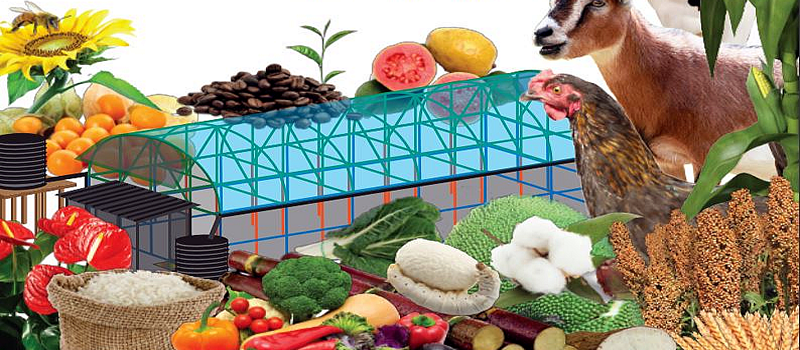
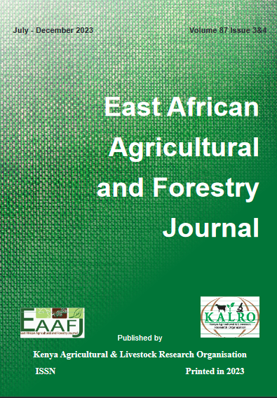

Current Issue
Vol 87 No 3&4 (2023): East African Agricultural and Forestry Journal

East African Agricultural and Forestry Journal is published by the Kenya Agricultural and Livestock Research Organisation (KALRO). Improving and sustaining the national soil and water resource base to meet the challenges of poverty alleviation and food security.
Published:
2023-11-09
Articles
The East African Agricultural and Forestry Journal (E. Afr. agric. For. J.) was establishment in April 1908. The East African Agricultural and Forestry Journal (E. Afri. Agric. For. J.) has remained as a very important outlet for publishing findings of original research and other scholarly works in African. The scope of the journal is quite broad allowing authors to submit a wide range of manuscripts. The Journal accepts the following materials from African countries written in English language for publication on a quarterly basis :-
Manuscripts in the area of agriculture, livestock, forestry and natural resource management.
Manuscripts submitted for publication must be original reports of research not simultaneously submitted to or previously published in any other scientific or technical journal and must make a significant contribution to the advancement of scientific knowledge.
Short articles which do not qualify for publication as scientific papers but can make a significant contribution to the advancement of scientific knowledge can be accepted for publication as Journal Briefs. Critical review and interpretation papers are also accepted for publication subject to the normal review process.
Manuscripts resulting from Symposia/Conferences having appropriate subject matter are also considered for publication as a compilation in a single special issue of the Journal.